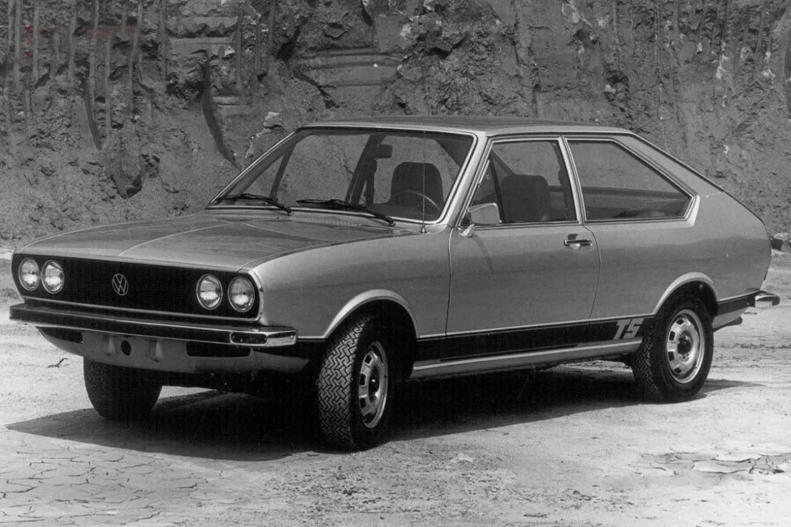

A Volkswagen, ou VW, é uma das marcas de automóveis mais conhecidas e respeitadas do mundo, com uma história que remonta a 1937, quando foi fundada na Alemanha. Ao longo dos anos, a Volkswagen estabeleceu-se como uma das maiores fabricantes de carros do mundo, com modelos emblemáticos, como o Beetle (Fusca) e o Golf.
Um dos pontos fortes da Volkswagen é a sua abordagem de design e engenharia, que se concentra na produção de carros seguros, confiáveis e duráveis, ao mesmo tempo em que oferece um desempenho excepcional e uma estética atraente. A VW também é conhecida por suas tecnologias inovadoras, como o sistema de injeção de combustível a diesel e a plataforma modular MQB, que é usada em muitos de seus modelos.
Além disso, a Volkswagen tem um compromisso forte com a sustentabilidade e a responsabilidade social. A empresa tem investido pesadamente em tecnologias de veículos elétricos e híbridos, bem como em iniciativas para reduzir suas emissões de carbono e melhorar a eficiência do combustível. A Volkswagen também tem trabalhado para promover a diversidade e a inclusão, bem como para melhorar as condições de trabalho em suas fábricas em todo o mundo.
Embora a Volkswagen tenha enfrentado desafios significativos ao longo dos anos, incluindo escândalos de emissões e de segurança, a marca continua a ser uma das líderes da indústria automotiva global. Com uma visão voltada para o futuro e um compromisso com a inovação, a Volkswagen está bem posicionada para continuar a produzir carros de alta qualidade e tecnologias avançadas que atendam às necessidades dos motoristas em todo o mundo.